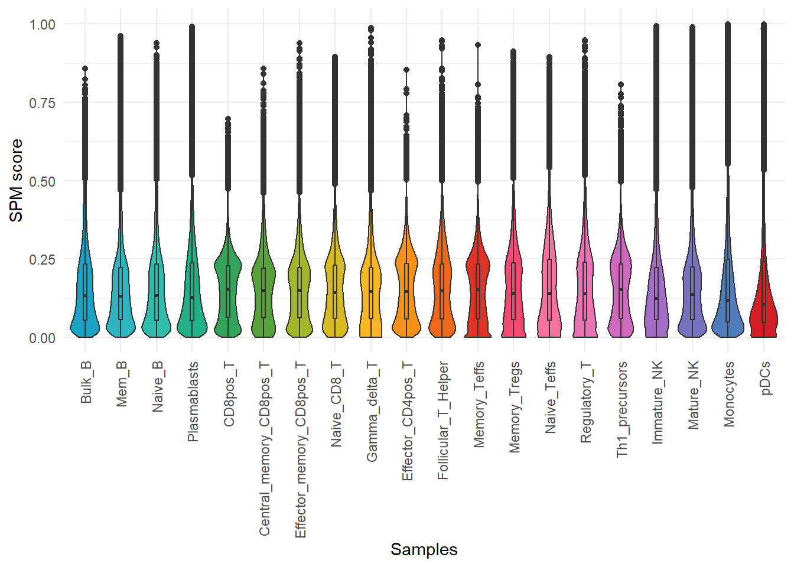
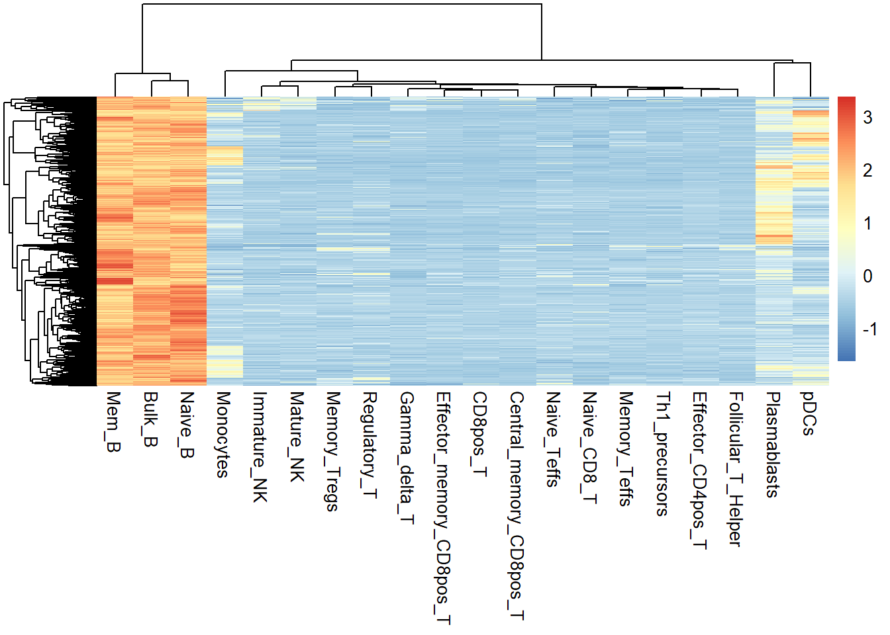
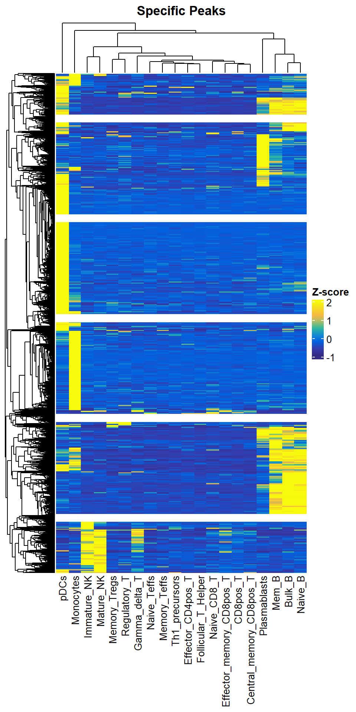
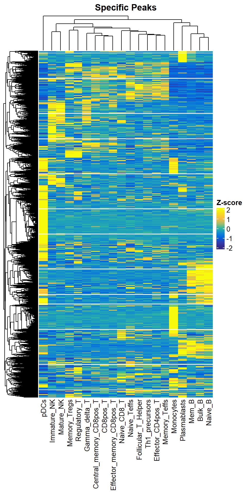
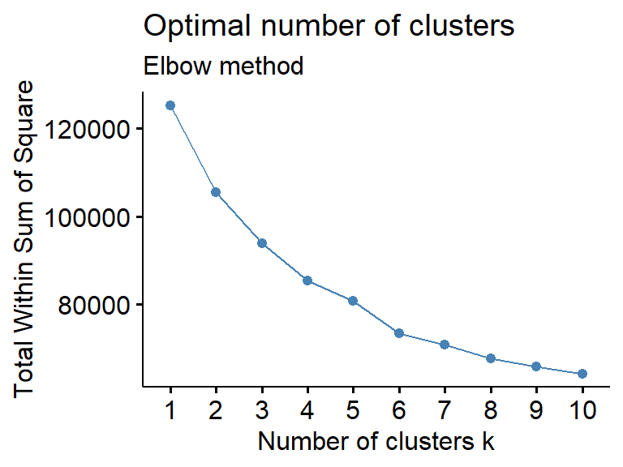
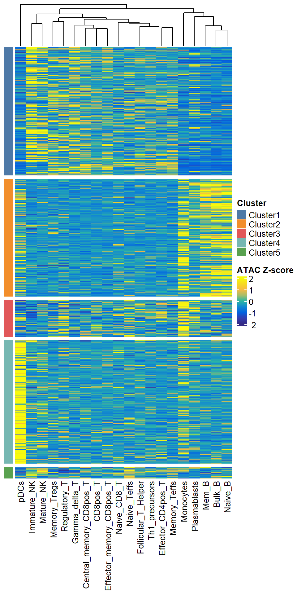
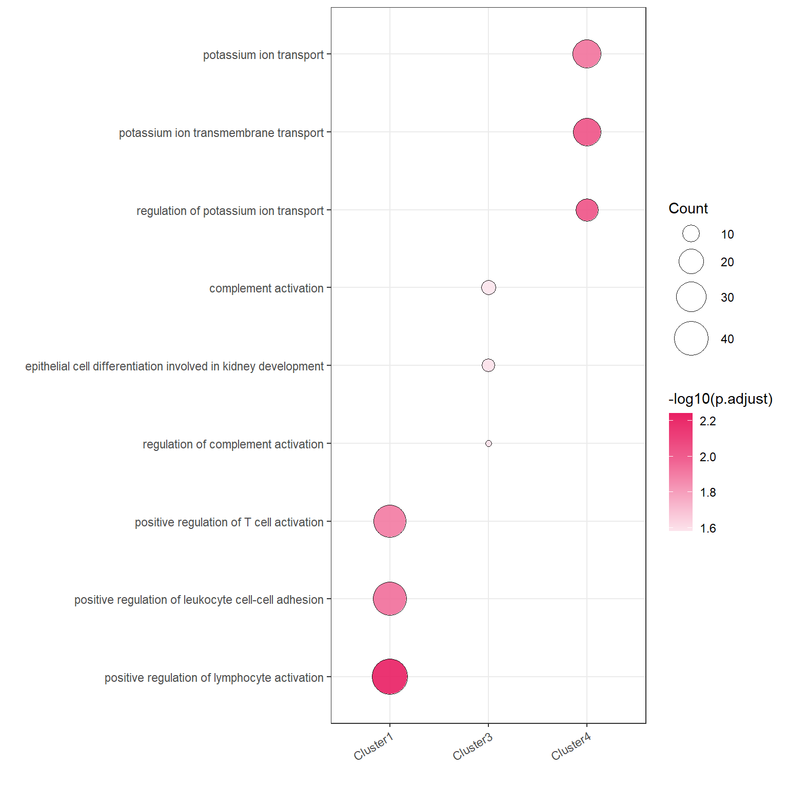

Chapter 8 Tissue(Sample) Specific Analysis
Tissue/organ-specific ATAC-seq OCRs can help us identify and understand differences between cell types and tissues. By analyzing specific OCRs, we can identify genes and regulatory elements that are highly expressed in a particular tissue/organ, providing insight into the basis of cell type and tissue specificity.
8.1 Calaluate the SPM matrix
For the quantified and normalized matrix, we can use calSPM to simultaneously calculate the specificity score of each OCR within each sample. Higher scores represent higher specificity for that OCR.
data("All_quant_data")
quant_data <- All_quant_data
calSPM(quant_data, plot = TRUE)## No id variables; using all as measure variables
8.2 Select the specific peak with your interests
In this way, we can obtain a new matrix of the same size as the input matrix, except that the values in it represent SPM scores, and by filtering this SPM score matrix, we can arbitrarily obtain OCRs that are either specifically open or both highly open in one or more samples. Here, we filtered out the highly open OCRs in Bulk_B, Mem B and Naive_B.
spm <- calSPM(quant_data, plot = FALSE)## No id variables; using all as measure variablespeak <- spm[spm$Bulk_B >= 0.4 & spm$Mem_B >= 0.4 & spm$Naive_B > 0.4,]
test <- quant_data[rownames(peak),]
pheatmap::pheatmap(rowZscores(as.matrix(test)),show_rownames = F)
8.3 Select the specifc peaks with JSD score
In addition to this, we can also use calJSD screen differential OCRs without bias by calculating the JSD score of each OCR across samples.
jsd_res <- calJSD(norm_data=quant_data)## 2023-10-23 14:36:28 Calculating JSD...head(jsd_res)## H_specificity
## chr1:9910-10596 4.358698e-02
## chr1:564574-570175 1.048062e-07
## chr1:713757-714733 8.826571e-03
## chr1:750692-750842 5.125147e-01
## chr1:752562-752915 6.348925e-02
## chr1:762339-763292 2.164577e-02Draw a density plot to see the distribution of JSD scores. Draw a density plot to see the distribution of JSD score. Similarly, a larger value of JSD score for OCR represents more specificity.
library(ggplot2)
library(ggpubr)
ggplot(jsd_res, aes(x=H_specificity)) +
geom_density(color= "#08519C", fill="#DEEBF7", size=1) + theme_pubr() +
xlab("JSD score") + ylab("Density")
Next we can use getSpecificPeak to obtain tissue-specific OCRs.
sp_peaks <- getSpecificPeak(norm_data = quant_data, jsd_file = jsd_res, cutoff = 0.2)## 2023-10-23 14:36:33 Get the TOP 20.00% specifci peaks.dim(sp_peaks)## [1] 23740 20We can use plotSpecificPeak to draw heatmaps of specific OCR. However, we found that most of these specific OCRs are derived from Plasmacytoid dendritic cells (pDCs), this is because our samples are mainly derived from T-cell types, and the differences between different T-cells are definitely smaller than the differences between different cell types. So it seems more reasonable to use TOP-specific OCRs in each sample for this analysis where the original sample is biased.
plotSpecificPeak(specific_peak = sp_peaks)## `use_raster` is automatically set to TRUE for a matrix with more than
## 2000 rows. You can control `use_raster` argument by explicitly setting
## TRUE/FALSE to it.
##
## Set `ht_opt$message = FALSE` to turn off this message.## 'magick' package is suggested to install to give better rasterization.
##
## Set `ht_opt$message = FALSE` to turn off this message.
8.4 Get the Top N specific peaks in every Samples / Tissues
So we provide the getTopSpecifcPeaks function to help you select TOP-specific OCRs by samples. It is worth noting that top-specific OCRs for similar samples may also be shared. So the number of TOP-specific OCRs you get at the end may not be equal to (in most cases is less than) Nsample x Ntop.
top1000 <- getTopSpecifcPeaks(spm_data = spm, norm_data = quant_data, top_N = 1000, save_path = "F:/cisDynet/example/", file_prefix = "Top2000_raw_data")
dim(top1000)## [1] 10496 20plotSpecificPeak(specific_peak = top1000)## `use_raster` is automatically set to TRUE for a matrix with more than
## 2000 rows. You can control `use_raster` argument by explicitly setting
## TRUE/FALSE to it.
##
## Set `ht_opt$message = FALSE` to turn off this message.## 'magick' package is suggested to install to give better rasterization.
##
## Set `ht_opt$message = FALSE` to turn off this message.
8.5 Get the optimal cluster number
Next, we can go ahead and divide these obtained difference OCRs into clusters/modules. We start by determining how many clusters/modules are appropriate to split based on getClusterNum. We generally use the final number of clusters/modules based on their elbow point. Of course, this step is NOT necessary. You can set a reasonable number of clusters/modules, as long as most of them are biologically meaningful.
getClusterNum(top1000)
We can then use plotClusterSpecificPeak to visualize the difference OCRs of these clusters/modules. To ensure the reproducibility of your results from running this step, we will save two files under the save path you provided, one is the specific grouping for each OCR (with the suffix clustering_Cluster_Group.txt). The other is the Zscore transformed matrix after clustering (suffix clustering_Clustered_Scaled_Matr.tsv).You can import this matrix and plot again without clustering.
plotClusterSpecificPeak(specific_peak = top1000, cluster_N = 5, save_path = "F:/cisDynet/example/", file_prefix="Top1000_clustering")
8.6 Get the cluster target genes
Finally, for the specific OCR and grouping information we got in the previous step, we can use getClusterTargetGenes to see which target genes are in each cluster/module.
target <- getClusterTargetGenes(cluster_group = "F:/cisDynet/example/Top1000_clustering_Cluster_Group.txt")
head(target)## chrom start end peak_center cluster TSS gene
## 1 chr1 100165637 100165976 100165806 Cluster4 100163798 ENSG00000223656
## 2 chr1 100194551 100194721 100194636 Cluster4 100163798 ENSG00000223656
## 3 chr1 10020974 10021652 10021313 Cluster2 10003465 ENSG00000162441
## 4 chr1 100223737 100224048 100223892 Cluster4 100232187 ENSG00000156869
## 5 chr1 100247222 100247415 100247318 Cluster3 100232187 ENSG00000156869
## 6 chr1 100458544 100458725 100458634 Cluster1 100435420 ENSG00000228084
## strand distance
## 1 + -2008
## 2 + -30838
## 3 - 17848
## 4 - -8295
## 5 - 15131
## 6 - 232148.7 GO Enrichment
We can simply run plotGO with the help of clusterProfiler to analyze the GO enrichment of genes for each cluster.
library(org.Hs.eg.db)plotGO(target = target,orgdb = org.Hs.eg.db,N_top = 3)## 2023-10-23 14:44:47 GO with Cluster4## ## 2023-10-23 14:45:18 GO with Cluster2## 2023-10-23 14:45:35 GO with Cluster3## 2023-10-23 14:45:48 GO with Cluster1## 2023-10-23 14:46:04 GO with Cluster5
In addition we can show the similarities and differences of the enriched pathways between different clusters in a network.
plotGONetwork(target = target,orgdb = org.Hs.eg.db)## 2023-10-23 14:46:11 Compare the GO results with clusters...